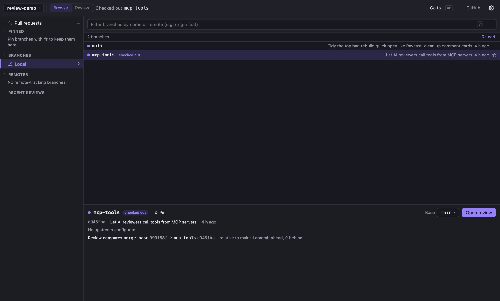

Browse branches and pull requests
Local branches, remotes and GitHub pull requests in one list. Pick a branch and a base, and Review compares it from the merge base. Each review is pinned to exact commits, so the diff doesn't move under you when someone pushes.
